ProjectNight.com
Wednesday Night Project Night, Page 5
Most recent night first.
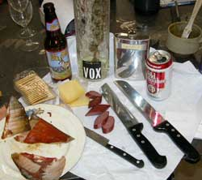
6 February 2008: Tim's shop
Proof of the success of the smoker was presented and consumed.
The serations on a serrated kitchen knife were ground off to make it a useful kitchen knife. The knife was then applied to a standing belt sander by one of the shop colleagues who is not a knife maker by trade, and does not have a belt sander of his own. Shortly thereafter he was grinding down the edge again to make it straight again. Well, how was he to know that those modern aggressive sanding belt grits can sand through even kryptonite in an instant if you are casually yakking about something else while sanding?
Some serious project designs were designed, over on the table, and would be described, but the web slave was watching the knife being carefully sanded down to what he thought was an intentional wavy pattern for some reason, while chit chatting with the guy doing the sanding.
And that is the full report because the some of the other projects are highly secret, redacted, classified and otherwise cannot be remembered because of that bottle of Vox vodka.
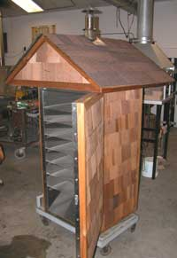
23 Jan: Tim's ShopFeatured Project: Wiring a smoke house so nice that you would not want to smoke anything in it.
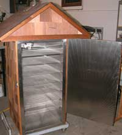
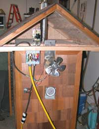
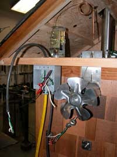
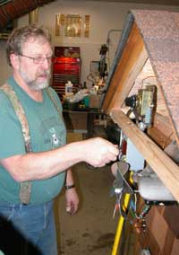
Throwing the switch the first time.
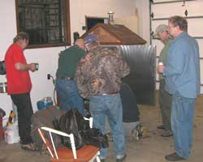
Oooops. Well, smoke is where you find it. And a smoke house is a good place for it.
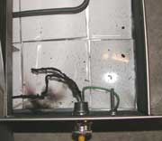
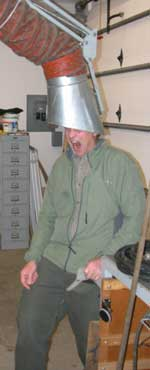
Then there was the chap who got too close to the dust collector.
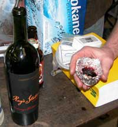
You know you are in an Alaska shop when you have to make your wine glass from tinfoil.
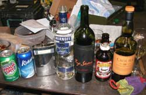
The explanation.
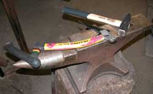
Ice tool adjustment, and crampon sharpening for the weekend on the Ice Towers.
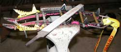
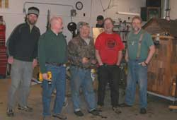
Picture posing and machining rhetorical bovine scat.
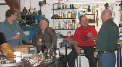
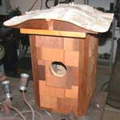
The finishing touches on the Hawk Owl nest box prepared it for placement by the end of February.
16 Jan: Jon's shop.
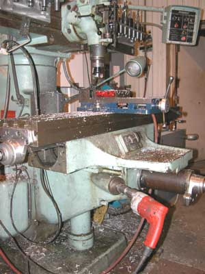
Notice the difference between a shop guy's cool shop, and a real shop guy's cool shop. The real shop guy got no time to be turning things by hand, so he chucks up a half inch drill motor to his vertical end mill vertical crank shaft and vertical cranks that thing up or down in a hurry when he wants to do that.Other shop guys wish they had a vertical end mill. And the rest of us wish we had a half inch drill motor.
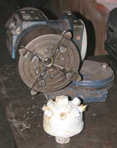
That chuck on the left, with the 3 axis rotating parts will be used to make the new John Reeves Ice Tower nozzle heads, similar to the one in the photo, for next year's attempt at the World Record Free Standing Ice Tower currently held by Lycksele Sweden. That chuck will replace the ten finger multi-axis chuck used for the previous nozzle heads. The ten finger chuck does not have the same gripping pressure. You should see the excitement when a thick 3 inch bell cap in a ten finger chuck on a drill press twists out and slings itself across the shop. More than one time.
Shop night is not for timid people.
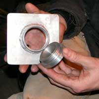
If you need a custom machined aluminum screw cap for access to your right hand, one is available at Jon's Shop. The left handed ones are back ordered.
That's it. Everything else said or done that night related to salmon and halibut fishing out of Mark's Shop in Juneau as soon as we stop talking about it and head south with a sailboat, kayak, or the stuff to make one.
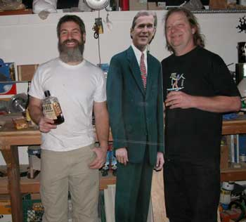
9 Jan: Matt's ShopGeorge shows up every once in awhile, but this is the first time he said we could include a photo of him, maybe because he finally decided to loosen up a bit, have a snap of Gamel, then XO, then the Knob Creek. It started with a demonstration of the SubKindler, which caused him to smile, complement the wonderful flavor, laugh, then talk about the good old days. Soon he was saying how much he liked the Danes, and asked for a snap of Gamel. He is not entirely bad when he is not around Cheney and his war mongers, entirely.
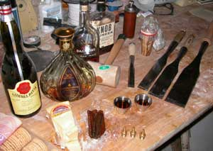
George was amused to hear that one of the ProjectNight chaps was awaken at 5:AM this morning, with a call from Tehran Iran. One of the main Tehran news services was considering an application for a new Washington DC correspondent. Our guy, well versed in reporting news as these words demonstrate, might have got the job if he had been more awake, not mentioned that he lived in Alaska, and the caller concluded that she got the wrong phone number.Somebody mentioned that the call might have been from the US Homeland Security Gestapo, attempting yet another desperate scam to fabricate evidence of a suspected enemy terrorist among us, to arrest, but the US Homeland Security Gestapo does not get up that early, in fact they have not woken up yet, and no real female is stupid enough to work for them.
The suspected Project Night chap told George that he had indeed prior offered the Iranian main guy with a long name that starts with an A, the process to solve his problem with George, and easily prevail, indicated at Think.ws, but the Iranian guy did not respond to the email, or even show up at Project Night. George was offered knowledge of the same process to solve his problems with the world, and prevail, but he only listens to Cheney, parrots his insatiable craving for more bomb production, and fiddles around with projects at Project Night. The human mind's process of reasoning cannot be found in Cheney's money and power-goal military industrial complex, much to the amusement of the observers.
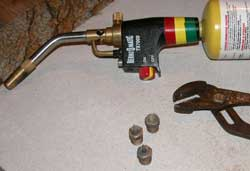
Oh yes, projects. There are entire industries, with thick glossy catalogs, making only fluids nozzles. Not one of them makes or understands nozzles optimized for making ice towers, which explains the dearth of ice towers.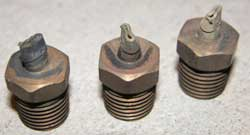
So far, after years of routine searching, only the precision machining experts of ProjectNight.com are producing Ice Tower nozzles, three of which are shown, with an indication of the precision fabrication process. An ice tower water distribution system in serious cold air requires each of several nozzles to produce a separate strong stream of water with a specific, single or double sided graduated spray, perpendicular outward, at a production cost affordable to ice tower technicians with no money. So far, 1/4 inch brass hose barbs, shown below the Gamel shots in the above photo, cut short, heated and squeezed, then drilled with a specific diameter hole on one side, are optimum. That design may change yet again after this lot is tried and evaluated on the WebCam page of AlaskanAlpineClub.org.Now, get back to your own projects, and let us know if you have a Project Night among your local group. We will tell George. He is desperate for reality opportunities, and we would prefer he goes somewhere else to slow down anyone else's social productivity.
26 December 2007: Matt's shop.
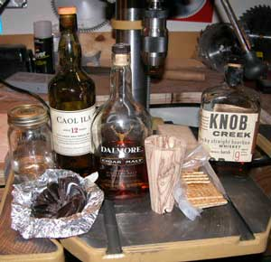
Tis the season to work on projects, of course. Check out that nice hand-made commercial chisel and the equally hand-made Knob Creek, Caol Ila and Peach Moonshine. The chocolate was hand consumed.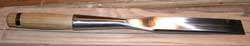
If Grivel would just make good crampons for ice climbing, they would not have to be sawed apart to add better parts and different toe bails at ProjectNight. The Grivel folks could read these words, and not figure it out because, like governments, they already have enough unquestioning people believing their rhetoric and paying them money. ProjectNights around the world turn bad equipment into good equipment, and conspire to do the same for governments.
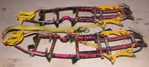
Climbing equipment companies do not get their advice from real climbers. Instead, they listen to the corporate sponsored climbers who spent their time getting good at rhetorically flimflamming the companies to get too much free equipment to actually use enough in normally varied real climbing situations, then tell the companies yet more rhetorical flimflam to get more free equipment instead of going climbing. If a climbing equipment company ever makes some good crampons, I will buy them if I ever get a real job to get some money.
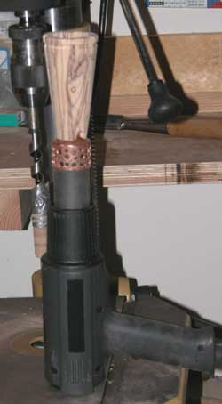
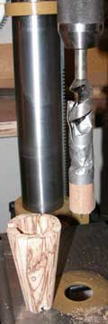
The SubKindler project advanced to rather close to completion, except for another part and little fine tuning which might require another ProjectNight.
A little duct tape and sand paper on a drill bit made the appropriate interior surface finishing tool for the decorative spalted birch. If the tool equipment companies would only listen to the SubKindler makers, who are certainly the aristocracy of the ProjectNight experts, the interior radius spalted birch sanding tool would have already been made, and be sold in decorative spalted birch boxes with interior radiuses.
The experiment was successful. Spalted Birch effectively reduced the heat transfer from the heat source to the warm air capture device handle. A full report may be alluded to on occasion.
Remember: Sears A 4060 Industrial model heat gun. Slightly above 3 on the heat setting.
Last week's schtoriepickle silver solder repair held well chipping hard ice on the ice towers at AlaskanAlpineClub.org.
Oh yes, there was additional discussions of great and weighty matters of serious consequence near which the world teeters at the very brink of disaster, albeit as usual.
And there we jolly well have it.
19 December: Jon's shop.
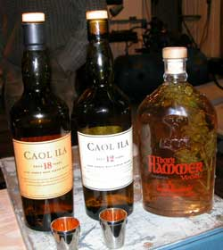
A guest instructor from the Alaska Scotch and Cigar Society (Fairbanks) was invited to ProjectNight to enhance the shop knowledge of fine single malt Ilay Scotch. An introductory evaluation of a Caol Ila 12 and 18 was offered, with much homdihooming over the nuances described in fine Scottish detail.An embellished Thor's Hammer Vodka and some fine ales were also discussed.
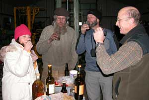
At 40 degrees below zero outside the shop, the scotch and ales were beneficial for their circulation enhancing qualities, if that is not just another shop myth.
Fine smoked salmon, cheeses, crackers and the like were enjoyed.
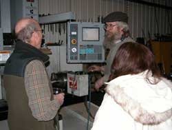
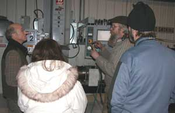
A detailed lecture on the operational procedure of a computer directed end mill qualified the participants in observation of various of its operations.
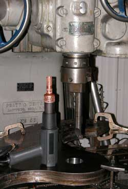
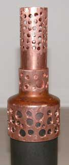
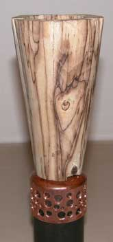
Projects were undertaken.
The long-ongoing SubKindler project was advanced, with the copper prototype of the heat dampening mechanism fitted to the stainless steel tube and spalted birch wood. Fortunately the world waiting list for SubKindler's is not long.
In the photo of the SubKindler, it is sitting on an impressive piece of steel being fabricated in Jon's shop, for a local sculptor using it to shape larger steel art.
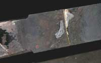
A small schtoriepickle used for chipping ice on the local ice towers (AlaskanAlpineClub.org), recently broken by the klutz who wields it on ice, was silver soldered back together, to evaluate the strength of silver solder in the hands of said klutz.
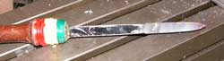
Page 6 February 08 --- March
08
Page 7 March 08 ------ October
08
Page 8 October 08 ---- January
09
Page 9 February 09 --- November
09
Page 10 November 09 - Present
Page 4 October 07 ---- December
07
Page 3 July 07 --------- October
07
Page 2 April 07 -------- June
07
Page 1 November 06 -- March 07